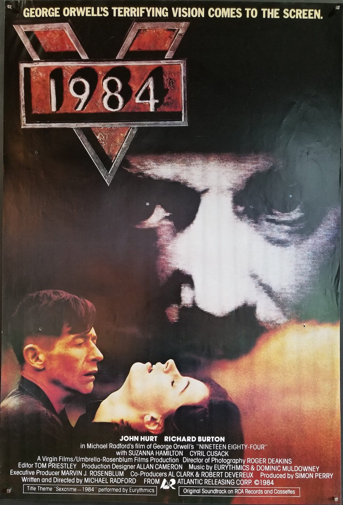

Watch “1984” movie directed by Michael Radford.

Read (or reread) the Preface Section on 1984, Disciplinary Surveillance, and Narrative Analysis.
Read the Afterword to the 1961 Signet edition of 1984, by Eric Fromm.
Extra Credit: Send me a link to an article about recent world events that mentions (or very well could mention) George Orwell, the book 1984, or related terms. If you like, give a brief description of the article and/or how Orwellian concepts come up. I will compile all of the responses and send them out on Sunday, Nov. 8, the day before the next class. I will also put the compilation on our website. I will credit contributors by first name only, unless they mention they prefer to be anonymous.
Double Extra Credit: Browse the link to our website References and Info for Week 2: 1984. The link to this (at the end of the last sentence) can be found on the page of our website obtained by clicking on the dropdown References and Info.
Can the longing for freedom be extinguished, or does human
nature push back, as a defiance to mind control?
In words that turn O’Briens
statement of power into a question:
Can a boot stamp on a human face forever?
Does the severity of the methods used by the state prove the
strength of what they suppress?
Do severe methods actually increase the stength of the
defiant?
Is
history really written by the victors?
Is truth written by those in power?
Note:
There is a lag when clicking on a button to play a clip from the movie 1984. The lag is worse when a button is pressed from the PowerPoint presentation, because the movie needs to be reloaded each time. It is a little better when play from 1984 - Scene Index. For class, I did tricks to be able to remove the lag, which relied on having a locally downloaded copy of the movie.
Rather than clicking buttons, you can position the copy of the movie by hand. The indicated time is for the version on archive.org of the movie 1984 released in 1984. This versions deletes the initial trademark Lion’s raw. Add 9 seconds to the inidcated time for other versions.